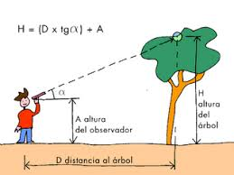
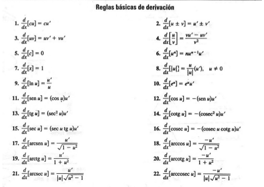

Es un concepto fundamental del cálculo diferencial que mide la tasa de cambio instantánea de una función en un punto específico.
Representa geométricamente la pendiente de la recta tangente a la curva en ese punto, indicando qué tan rápido varía la
función ante cambios mínimos en su variable independiente.
son fundamentales para la vida cotidiana porque permiten entender, medir y optimizar tasas de cambio; es decir,
nos ayudan a calcular qué tan rápido cambia una cantidad respecto a otra.


Las reglas básicas de derivación permiten calcular derivadas de funciones sin usar la definición de límite.
Información de una instituciónnombre de alumno: Eduardo Alejandro Guzmán Barrera
Práctica